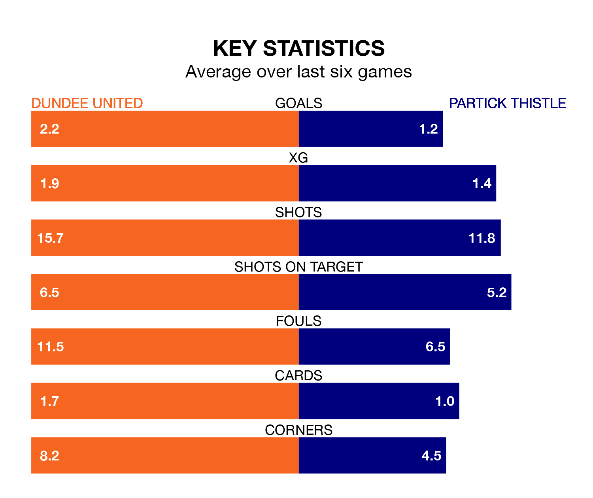

Two of the Championship's top sides face each other at Tannadice Park in Friday's late kick-off, when table-topping Dundee United host third-placed Partick Thistle.
Dundee have picked up 21 wins and nine draws from 35 games so far this season, and sit 17 points above the visitors going into the 7.45pm match.
Thistle, meanwhile, have won 14 and drawn 13, picking up 55 points.
With 69 goals in 35 games so far this season, Dundee are the league's highest scorers with 2.0 goals per game. And they are conceding fewer than average, letting in 22 goals at a rate of 0.6 per game.
Partick Thistle are also above average scorers, with 1.8 goals per game, compared to a league average of 1.4. They have conceded 1.4 goals per game.
In Brian Graham, Thistle have the league's sharpest shooter so far this season. He has notched 20 goals in 33 appearances.
His goal rate of one every 138 minutes is slightly quicker than that of Louis Moult, United's top scorer with a goal every 131 minutes, and a total of 17 goals in 32 games.
In the last 10 years, Dundee and Partick Thistle have played each other on 22 occasions. Dundee won 11 of them, Partick Thistle six, and they drew five times.
On average, the Terrors scored 1.7 goals and Thistle 1.1 in those matches.
Their last meeting was on March 2, when they played out a 1-1 draw.
The Terrors are in good form in the Championship, with four wins and two draws from their last six games.
With three wins and three draws over that period, the visitors' form is slightly worse – they have taken 12 points from 18, compared to the home side's 14.
Dundee's last match was on April 26, a 0-0 draw against Airdrieonians.
Partick Thistle drew 0-0 with Ayr United last time out, on Saturday.
Updated: 12:00 (UTC), 02/05/24